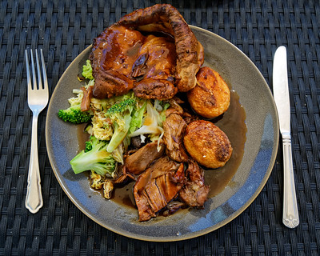

Home
Roast Lamb

"A roast lamb Sunday dinner at Green Man pub, Takeley Street, Essex, England" by Acabashi is licensed under CC BY 2.0 
 .3
.3
Description
Roasted veggies as well as potatoes combined together with delicious lamb, roasted in mint and rosemary spices.
Ingredients
- Lamb 1kg
- Potatoes
- rosemary, salt, pepper
- garlic
- olive oil
- Brocolli
Steps
Prepare Lamb
- Preheat oven 180 degrees
- Take lamb out of packaging
- Cut garlic and stuff it in the lamb
- Cover the lamb with oil
- Season with rosemary,salt and pepper
- Put in oven and cook till temperature is 76 degrees
Prepare Veggies and Potatoes
- Preheat oven 180 degrees
- Peel potatoes and boil till soft
- Put veggies and potatoes in pan
- Roast until potatoes are golden brown
Enjoy
- Make gravy and Enjoy